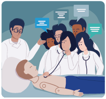
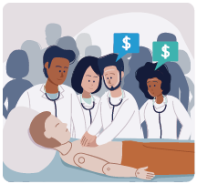
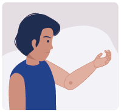
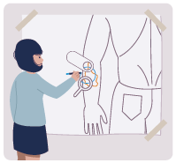
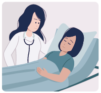
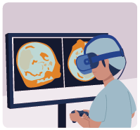
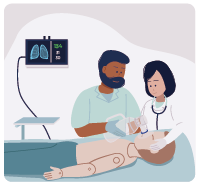

La simulación pretende ubicar al estudiante en un contexto que reproduce una situación clínica (1). Estos contextos seguros y controlados, son creados de acuerdo con las necesidades de formación y están basados en circunstancias y escenarios supuestos (2). La bioética, que vela por la protección de los derechos, el aseguramiento de la calidad en la educación médica y la seguridad de los pacientes, ha promovido el desarrollo de la simulación como estrategia didáctica en las diferentes áreas de la salud, debido a que los errores presentados por los estudiantes pueden ser corregidos al repetir el procedimiento de manera correcta (3).
En la siguiente tabla se realiza una comparación entre metodología tradicional de educación y educación basada en simulación:
| Educación tradicional | Educación basada en simulación |
|---|---|
| Conferencia | Reproducción de escenarios clínicos reales |
| Metodología pasiva de enseñanza-aprendizaje | Metodología activa de enseñanza-aprendizaje |
| Desarrollo de competencias genéricas | Desarrollo de competencias genéricas y transversales |
| Es posible realizarla en grupos grandes de estudiantes | Se debe realizar en grupos pequeños de estudiantes para lograr la participación activa por parte de todos los estudiantes |
| Requiere menor disponibilidad de tiempo | Requiere mayor disponibilidad de tiempo pues al tratarse de grupos de personas pequeños, se deben realizar las actividades correspondientes en múltiples sesiones |
A continuación, puede observar el video “La simulación como estrategia didáctica”, el cual describe el origen de la simulación y sus diferentes fases: lectura previa del tema, preparación de la estación, planeación de la situación clínica, introducción al escenario, correr escenario y debriefing.
- Ventajas y limitaciones
-
Ventajas y limitaciones
Ventajas
- El estudiante se acerca a escenarios clínicos reales y así puede tomar decisiones totalmente autónomas, sin las implicaciones que recaerían sobre el paciente.
- Protección del paciente debido a que la simulación permite que se considere como el fin de todo proceso de aprendizaje, como lo establece la ética kantiana.
- Autonomía y posibilidad de reflexionar acerca de la misma y de sus consecuencias a modo de autoevaluación, lo cual fomenta su aprendizaje y el de sus compañeros.
- La retroalimentación se fundamenta en las observaciones del profesor sobre las maneras en que los alumnos se enfrentan a diferentes situaciones.
- Estimula la confianza y motivación de los estudiantes en torno al aprendizaje, lo cual se fundamenta en la percepción de autoeficiencia y control interno.
- La motivación favorece las adquisición de habilidades y un mejor rendimiento académico en todas las asignaturas de las áreas de la salud.
- Permite replicar un mismo escenario para varios estudiantes y evaluar su desempeño sin dejar de lado los beneficios de costo-efectividad.
- Permite mejorar la curva de aprendizaje, lo que minimiza los riesgos en la práctica clínica real de los egresados.
Limitaciones
- Disponibilidad de recursos humanos y económicos.
- Requiere de capacitación y disponibilidad de tiempo por parte de los maestros, ya que en muchas ocasiones no se encuentran familiarizados con los equipos utilizados, no tienen experiencia en la enseñanza con este método y deben rediseñar el curso en torno a los objetivos que se pretenden lograr.
- Se requieren grupos pequeños, lo cual prolonga la duración del curso.
- El ambiente, puede resultar intimidante para algunos participantes.
- No sustituye la realidad; su uso debe ser complementario pero los escenarios clínicos reales contribuyen al perfeccionamiento de las competencias.
- Estrategias de simulación
-
Estrategias de simulación
ToqueDe clic en cada uno de los elementos para ampliar la información.
Simulación híbrida
Descripción Impacto Combinación de los simuladores con los pacientes reales para recrear un escenario clínico. Adquisición de competencias individuales en habilidades clínicas. Simulación de un caso nuevo
Descripción Impacto Diseño de un caso clínico de un paciente con una enfermedad poco frecuente, que puede incluir varios eventos. Desarrollo de pensamiento crítico que perfecciona las competencias asociadas a los objetivos educativos del área clínica. Simulación en pacientes estandarizados
Descripción Impacto Participan actores reales para representar casos clínicos específicos. Pueden ser usados para evaluar la elaboración de la historia clínica, comunicación con el paciente y cómo se realiza el examen físico. Adquisición de habilidades comunicacionales, psicomotrices y de trabajo en equipo. Simulación in situ

Descripción Impacto Diseño de un escenario en el sitio para cuidar un paciente. Desarrollo de pensamiento crítico que perfecciona las competencias asociadas a los objetivos educativos del área clínica. Simulación virtual
Descripción Impacto Se realiza con escenarios simulados por computadora, se pueden tener varios estudiantes de manera simultánea. Adquisición de competencias individuales en habilidades clínicas. Simulación de tareas complejas

Descripción Impacto Se utiliza para desarrollar habilidades manuales como técnicas quirúrgicas. Adquisición de competencias individuales en habilidades manuales. Simulación de paciente completo
Descripción Impacto Se utilizan maniquíes de tamaño real con situaciones clínicas complejas que requieren ser resueltos en equipo. Adquisición de competencias individuales en habilidades clínicas. Tomado de Serna Corredor DS, Martínez Sánchez, L. La simulación en la educación médica, una alternativa para facilitar el aprendizaje. Archivos de Medicina. 2018;18(2). Disponible en http://revistasum.umanizales.edu.co/[...]Para conocer un poco más sobre algunas de estas estrategias, observe los siguientes videos:
Este video le ayudará a comprender la diferencia entre esta estrategia con un paciente simulado, estandarizado o con un maniquí, y a reconocer los diferentes tipos de simuladores (baja, mediana y alta fidelidad).
Este video le mostrará un ejemplo del espacio en donde se puede realizar esta estrategia.
Un componente especial de la simulación es el debriefing, el cual se define como la conversación entre varias personas para revisar un evento real o simulado, en la que los participantes analizan sus acciones y reflexionan sobre el papel de los procesos del pensamiento, las habilidades psicomotrices y los estados emocionales para mejorar o mantener su rendimiento en el futuro (4).
Observe el video “Debriefing”, el cual explica sus fases como reacciones (descarga de emociones, resumen de los hechos), comprensión (descubrimiento de los marcos mentales de los estudiantes) y síntesis.
El problema para algunos docentes con el debriefing, es que no encuentran el modo de manifestarse abiertamente sobre la actuación clínica observada sin herir los sentimientos o provocar una actitud defensiva en sus compañeros (5). Frecuentemente, evitan expresar de forma oral sus críticas por no enfrentarse a sus compañeros, no ponerlos en evidencia o no provocarles emociones negativas, ya que desean conservar una buena relación profesional con ellos. Sin embargo, es fundamental realizar un debriefing efectivo, es decir, el enfoque con buen juicio para resolver este dilema.
A continuación, aparecerán algunas situaciones que contrastan los diferentes estilos de debriefing. Usted deberá emparejar correctamente, en caso de que corresponda, un debriefing con juicio, sin juicio o con buen juicio.
Analice cada uno de los siguientes enunciados y seleccione el tipo de debriefing con juicio, sin juicio o con buen juicio que le corresponda.
ToqueDe clic en cada número de la parte de abajo para pasar entre enunciados.
En cada enunciado arrastre la opción correcta a la casilla punteada de respuesta..
El docente efectivo
1. Ayuda al participante a cambiar diciéndole en qué se equivocó.
Respuesta:
2. Ayuda al participante a cambiar, proporcionando preguntas para que él mismo se dé cuenta en qué se equivocó.
Respuesta:
3. Crea un contexto para el aprendizaje y el cambio.
Respuesta:
Objetivo principal del debriefing
1. Interno: observar los significados y presunciones tanto del docente como del participante.
Respuesta:
2. Externo: Señalar de forma delicada las acciones e inacciones del participante.
Respuesta:
3. Externo: Corregir las acciones e inacciones del participante.
Respuesta:
¿Cómo se considera al participante?
1. Una persona cuyas acciones son consecuencia de presunciones, conocimiento y actitudes específicas.
Respuesta:
2. Una persona que realiza acciones y comete errores.
Respuesta:
3. Una persona que realiza malas acciones y debe corregir errores.
Respuesta:
¿Quién conoce la verdad sobre la situación?
1. Únicamente el docente tiene la perspectiva correcta
Respuesta:
2. El docente tiene la perspectiva correcta
Respuesta:
3. El docente tiene su perspectiva, y los participantes, la suya
Respuesta:
¿Quién no entiende?
1. El participante porque es un aprendiz.
Respuesta:
2. El participante porque no sabe y yo le tengo que aclarar.
Respuesta:
3. El docente.
Respuesta:
Escuche las siguientes expresiones que puede tener un docente en un debriefing, sobre su propia actitud y la del estudiante. Posteriormente, analícelas y clasifíquelas según su estructura: Con juicio, Sin juicio o Con buen juicio.
- Con buen juicio
- Con juicio
- Sin juicio
- Con buen juicio
- Con juicio
- Sin juicio
- Con buen juicio
- Con juicio
- Sin juicio
- Con buen juicio
- Con juicio
- Sin juicio
- Con buen juicio
- Con juicio
- Sin juicio
- Con buen juicio
- Con juicio
- Sin juicio
- Con buen juicio
- Con juicio
- Sin juicio
En resumen, el debriefing es una estrategia evaluativa formativa que permite facilitar el desarrollo personal. Utiliza la indagación para poner en manifiesto los marcos mentales que explican la diferencia entre el rendimiento clínico esperado y el observado, y permite proporcionar un feedback adaptado a las necesidades de cada participante para ayudarle a elaborar nuevos modelos mentales que le permitan desarrollar acciones nuevas y más efectivas en situaciones clínicas similares.
La ECOE es un modelo de prueba práctica para evaluar las competencias profesionales que integra diversos instrumentos para determinar el nivel de competencia de un profesional, y se desarrolla a lo largo de un circuito de estaciones que simulan situaciones clínicas para acercarse a la práctica real (6).
Revise el video sobre ECOE y observe las diferentes fases de esta estrategia evaluativa basada en los tres niveles de la Pirámide de Miller (7).
Pirámide de Miller
ToquePase el cursor sobre las casillas de la pirámide para desplegar la información, la cual se verá bajo la gráfica.
Práctica profesional real
La evaluación se hace en una situación o contexto real como el Mini-CEX (Mini Clinical Evaluation Excercise), OECP (Observación Estructurada de la Práctica Clínica), portafolio, el feedback 360o, las videograbaciones.
En cada estación se solicita al evaluado resolver determinada situación como la interpretación de imágenes clínicas y pruebas diagnósticas, actuar como profesional en escenarios de simulación de situaciones de la vida real (en un programa virtual por computador, con maniquíes y con pacientes simulados estandarizados), examen oral estructurado con paciente simulado, búsqueda de bibliografía sobre el caso clínico analizado, etc. Una prueba ECOE utiliza diferentes instrumentos evaluativos como casos clínicos, preguntas de respuesta corta, pacientes estandarizados, maniquíes o preguntas tipo test (8).
A continuación, revise en detalle las fases de elaboración de una ECOE.
Observe la tabla de especificaciones de una ECOE:
ToquePase el mouse sobre las siglas para desplegar información.
| Dominio | Instrumento | Edad | Sexo | A | EF | C | HT | M | P | AF | Total |
|---|---|---|---|---|---|---|---|---|---|---|---|
| Ejercicio | PS | 10 | 90 | 100 | |||||||
| Dieta saludable | PS | 10 | 90 | 100 | |||||||
| Abuso | PS | 20 | 40 | 40 | 100 | ||||||
| Obesidad | PS | 50 | 20 | 30 | 100 | ||||||
| Sutura | M | 100 | 100 | ||||||||
| Artralgias | PS | 60 | 20 | 20 | 100 | ||||||
| Alteración exámenes de laboratorio | PRC | 100 | 100 | ||||||||
| Piel | I | 100 | 100 | ||||||||
| EKG | I | 100 | 100 | ||||||||
| Total | 70 | 60 | 100 | 100 | 350 | 180 | 40 | 900 | |||
| Porcentaje | 15 | 14 | 15 | 13 | 20 | 11 | 12 |
Modificado de Roger, R. (2010)
- Instrumento. PS: paciente simulado; PRC: pregunta de respuesta corta; I: imágenes; M: maniquí.
- Competencias. A: anamnesis; EF: exploración física; C: comunicación; HT: habilidades técnicas; M: manejo; P: preventivas; AF: atención de la familia.
- Puntuación total. Cada caso vale 100 puntos, si tiene 9 casos la prueba vale 900 puntos. Cada competencia es un porcentaje del valor total fijado previamente.
- Diseño de la prueba. El comité logístico desarrolla la prueba de tal forma que tanto el contenido clínico como la logística concuerdan en espacio y tiempo.
- Prueba piloto. Sirve para la validación de la logística, obtener datos de la fiabilidad y revisar las situaciones clínicas.
- Determinación de los resultados. Aquí se define el punto de corte para considerar superada la prueba.
- Consolidación. Es cuando la prueba puede aplicarse en el formato utilizado a una mayor escala, obteniendo una información sobre su utilidad y eficiencia.
Ahora que conoce las aspectos básicos de la estructura y el diseño de una ECOE, además de las potencialidades y limitaciones del formato, propóngase realizar en el futuro una estación ECOE en su propia especialidad, incluso, aunque sea de ciencias básicas siguiendo los siguientes pasos: